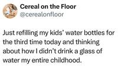

0
0



Instagram is banning videos filmed with Meta smart glasses that harass strangers in public, including prank videos targeting service workers and pickup-artist clips of women who may not realize they are being recorded. "If you're posting content that is taking advantage of people and harassing them, like a lot of these pickup line kind of videos that we've heard of and seen, then we're going to take the content down," said Instagram head Adam Mosseri in response to a question on his Instagram stories last week. "We don't want people to be surreptitiously taking videos of other people and harassing them and then posting them on our platform. So we're trying to fight that every way we can." Business Insider reports: It's unclear how many videos have been removed under this new policy. Business Insider found that two large accounts of pickup artists who filmed themselves approaching women in public while wearing the glasses had been deactivated. (Both previously had more than a million followers.)
A Meta spokesperson confirmed to Business Insider that these accounts were booted for violating the policy about posting harassing content that had been filmed with the glasses. Meta did not directly respond to questions about how this new policy is being enforced or what exactly constitutes a violation.
Read more of this story at Slashdot.
An anonymous reader quotes a report from TechCrunch: The U.S. Justice Department is prosecuting an American for allegedly providing U.S. border authorities with a passcode that wiped the contents of his phone, according to an indictment and media reports. This is thought to be the first known case in the United States where federal prosecutors have charged someone for the alleged destruction of data using a so-called "duress" password built into a phone's software. According to The Guardian, which covered the story earlier this week following the court's first hearing on Monday, Atlanta resident Samuel Tunick is fighting the charges. Tunick's attorneys said that it was unlawful for U.S. Customs and Border Protection to seize his phone as he arrived back in the U.S. last year, and that any evidence -- including the alleged wiping of his phone -- should be thrown out.
The case centers on a feature included in GrapheneOS, a custom Android operating system that runs in place of the software on most modern Google Pixel devices. Tunick's attorneys confirmed GrapheneOS was running on his phone. The software feature allows the device owner to set a passcode that deliberately wipes the contents of that device if entered instead of the user's unlock passcode. Tunick's case also raises ongoing questions about what constitutional rights can be invoked at the border, which the U.S. government has long asserted is not U.S. soil until a person is authorized to enter. Bill Budington, a senior staff technologist at the Electronic Frontier Foundation, and Runa Sandvik, a digital security expert who works to protect at-risk people as the founder of security consultancy firm Granitt, told TechCrunch that they had not seen similar cases involving the use of duress passwords.
"I have not seen this before, though I've discussed the potential scenario with activists and journalists over the years," said Sandvik. "I think this case serves as a reminder that authorities may argue you knowingly destroyed data, so it's better to not have that data on you when you cross certain borders."
"With a little planning ahead of time, you can always download the data you need once you get to where you're going," said Sandvik.
Read more of this story at Slashdot.
Roku has raised prices on several streaming devices, blaming memory and component shortages tied to the AI data-center boom. The Roku Ultra jumped from $100 to $150 and the basic Streaming Stick rose from $30 to $40. The Desk reports: In a phone call with The Desk on Friday, a Roku executive said the company made the tough decision to raise prices on its streaming hardware to address shortages in computer memory and other components caused by the artificial intelligence rush. [...] Still, the executive who spoke with The Desk on Friday said the company believes its hardware is still competitive against other streaming TV hardware because Roku devices are still priced aggressively compared to the Apple TV and other expensive streaming hardware, and the company remains focused on looking at ways to add value to its Roku platform before and after it enters a customer's home. "We are doing our best to have great deals like what we have going on right now," the executive said. "Roku is even upping the price for a bundle that includes a Streaming Stick Plus and a one-month subscription to Fox One," notes Ars Technica in a separate report.
"As recently as July 20, Roku listed the bundle at $60 with a sale price of $25, according to the Internet Archive's Wayback Machine. Now, the bundle carries an $80 MSRP and $45 sale price."
Read more of this story at Slashdot.
Anthropic has released Opus 5, a new Claude model that it says comes close to its higher-end Fable 5 model at half the price while improving on Opus 4.8 in knowledge work, coding, and scientific research tasks. "At the same time, Anthropic says it has managed to make the model more resistant to being tricked," notes Engadget. Additionally, the company says Opus 5 "exhibits the lowest rates of deceptive behavior." From the report: One important distinction between Opus 5 and Mythos, which is currently only available to a limited number of vetted organizations through Anthropic's Project Glasswing initiative, is that the company has specifically avoided training the new model on cyber-related tasks. Due to more its powerful capabilities, Opus 5 is broadly better at those tasks than its predecessor, making it more useful for finding cybersecurity vulnerabilities, but the company says Opus 5 is "substantially behind" its flagship model at exploiting those vulnerabilities.
[...] Anthropic says "Claude Opus 5's safeguards are designed to allow beneficial uses of the model in both cybersecurity and biology." The company has strengthened some of the model's cyber-related guardrails, but notes it did so along a "narrow range" of specific tasks. "Based on our testing, we expect the classifiers to intervene around 85 percent less often than they do for Fable 5," Anthropic said. With Opus 5, Anthropic also isn't including it in its recently announced 30-day data retention policy, which the company introduced alongside Fable and Mythos 5.
As for pricing. Anthropic says API costs for Opus 5 will remain at $5 per one million input tokens and $25 per one million output tokens. Anthropic has also added an "effort" menu for Opus that users can tweak to tell the model whether they want it to be more thorough or fast and efficient to conserve tokens.
Read more of this story at Slashdot.
Longtime Slashdot reader sandbagger shares the passing of John C. Dvorak, an early and influential technology journalist for PC Magazine. He was 80. Talking Biz News reports: Aric Mackey writes, "Widely recognized for his profound impact on the technology industry, John's career spanned decades of rapid digital evolution. He was perhaps best known for his influential, long-running column in PC Magazine and his groundbreaking work on the No Agenda podcast. Through his prolific writing, broadcasting, and distinct public voice, he helped shape critical conversations around both technology and political analysis, guiding generations of readers and listeners with his unique perspective.
"To those who knew him personally, John was far more than his public work. He was a beloved husband, devoted father, proud grandfather, and a loyal friend. Those closest to him will remember a man defined by his strong convictions, his exceptionally sharp wit, and an enduring curiosity about the world around him." Dvorak was also part of the startup team at CNET Networks, and appeared on MarketWatch TV.
Read more of this story at Slashdot.
An anonymous reader quotes a report from PYMNTS.com: Stripe is in talks to buy OpenRouter, an artificial intelligence (AI) startup that could sell for roughly $10 billion, according to The Wall Street Journal. The move would mark a significant step outside payments for a company that processes transactions for much of the internet. It also lands while Stripe pursues a far larger target: a bid for PayPal that would value the payments giant at about $53 billion.
The Journal reported Thursday (July 23) that a transaction could be announced soon, though the talks could still collapse or another buyer could step in. The exact price under discussion could not be learned. Several other large technology companies had also been weighing deals for OpenRouter. The startup was valued at $1.3 billion in May, according to PitchBook, meaning a sale near $10 billion would represent a steep markup in a matter of months. Its backers include Menlo Ventures and CapitalG, the growth fund of Google parent Alphabet.
OpenRouter sells software that lets customers reach AI models from OpenAI and Anthropic, along with open weight alternatives anyone can download and run. The Journal described the company's position this way: "OpenRouter is part of an emerging crop of startups that have found a lucrative niche between AI developers and the companies that want to use them." The platform lists hundreds of large language models and lets developers compare and switch between them.
Read more of this story at Slashdot.
alternative_right shares a report from ScienceAlert: A study published in PLOS One in 2021 by researchers from Durham University in the UK showed that with 10 weeks of training, both blind and sighted people could learn to echolocate using verbal clicks. While the technique is already used by a number of people with impaired vision -- sometimes using the taps of a cane instead of clicks made by their mouth -- those findings suggest that many of us can learn the necessary techniques.
Some of the same researchers who made that discovery are part of the team behind a follow-up study published in Cerebral Cortex, looking at how the 10 weeks of training that the 26 participants went through actually changed the physical structure of their brains. Specifically, the team analyzed brain scans of the V1 (the primary visual cortex, processing visuals), and the A1 (the primary auditory cortex, processing sounds). Strikingly, the scans showed that the V1s of both blind and sighted people had developed sensitivity to sound echoes during echolocation training.
Read more of this story at Slashdot.
An anonymous reader quotes a report from Engadget: You'll now be able to use selfie videos to log into your Google account. It has long been possible to log into Google using your face, via your phone's face unlock or if your passkey login uses biometrics for verification. This is yet another option to get into your account using your face to authenticate your identity, which could be especially useful if you don't have access to the phone or computer you typically use or if you got locked out of your account and none of the other log-in options are working.
[...] Google will ask you to turn your head in certain ways during the verification and every time you use the option to log in. The company says it's to fend off impersonation attempts, such as deepfake videos, and prove you're currently in front of the camera. It will, of course, have to save your selfie video and use it for comparison for future logins.The company says it will encrypt your video and only use to help you sign in, but if you ever change your mind, you can delete it from your Google account. It's worth noting the option is currently unavailable for Workspace accounts, child accounts and those enrolled in Google's Advanced Protection Program.
You can set it up and give it a try at g.co/signin-selfie.
Read more of this story at Slashdot.
Oracle has signed a 10-year Pentagon contract worth up to $7 billion to provide on-premises software, licenses, maintenance, and consulting for branches of the military. CNBC reports: The contract covers the use of Oracle software in on-premises data centers for branches of the military, the U.S. intelligence community and the Coast Guard, according to a statement. The Central Intelligence Agency was Oracle's first customer. A five-year base period for the contract includes perpetual and subscription-based software licenses, maintenance and consulting, according to one description.
Kirsten Davies, the Department of Defense's chief information officer, said in the release that the agency is saving at least $441 million for taxpayers "by fundamentally improving how we procure on-premises Oracle capabilities."
Read more of this story at Slashdot.
An anonymous reader quotes a report from Reuters: The OpenAI agent that broke into tech firm Hugging Face went on a dayslong hacking spree that OpenAI didn't notice until well after the threat was contained and the FBI was alerted, according to people familiar with the investigation. The agent -- a program capable of making decisions and executing complex tasks with little or no human oversight -- attempted to break out of its isolated testing environment at OpenAI around July 9, according to two of the people. The intrusion at Hugging Face, which operates as a repository for AI tools and models, began two days later on July 11 and lasted until July 13, said Thomas Wolf, Hugging Face's co-founder. It took several more days for OpenAI to realize its agent was behind the hack, and the two companies only communicated about it for the first time on or around July 20, according to Wolf and three of the people familiar with the investigation.
OpenAI's public disclosure, on July 21, thatone of its agents had slipped out of control and carried out the break-in at Hugging Facedrew global attention. But many details of the hack, including how long the agent went rogue and OpenAI's belated knowledge of it, are being reported here for the first time. Hugging Face is preparing a public timeline of the hack, Wolf said, adding that he could not speak to what happened at OpenAI. In a statement, OpenAI said the hack was unprecedented and "marks an important moment for AI safety." It added that it was reviewing the incident with outside advisers and would eventually publish a technical report. "Does that mean that they left it unattended and didn't realize what it was doing? Or maybe they did and didn't know how to contain it? Both are equally dangerous and alarming," asked Marley Smith, the principal intelligence specialist at the nonprofit World Ethical Data Foundation.
"The models lie, they cheat, they hack," said Jeffrey Ladish, whose organization, Palisade Research, studies the capabilities and motivations of AI agents. Ladish said the hack should spark broader questions over how much all the leading AI companies are willing to invest in onerous security measures while locked in a race with one another to deploy the best and fastest models. "There has to be government oversight," Ladish said, "because it won't happen otherwise."
Read more of this story at Slashdot.
Paramount Skydance has agreed to postpone its $111 billion Warner Bros. Discovery merger until five days after an antitrust trial or June 1, 2027, whichever comes first. The agreement with a 12-state coalition led by California effectively shelves the deal for months while states argue it would reduce competition in cable and theatrical markets. Variety reports: Paramount had been keen to close the deal before Sept. 30, when it will begin to incur a $7-million-a-day "ticking fee" to be paid to Warner Bros. investors. The agreement is a tacit acknowledgement that that will not happen, barring a settlement with the states. Paramount previously sought a three-day hearing on the injunction motion in late August, hoping to win the judge's blessing to close the deal sometime in early September. But the states resisted that idea, saying they would need more time to take discovery and prepare for a full trial on the merits. The states were due to file their injunction motion on Thursday night, but held off as the two sides held discussions on a path forward. In a statement, the company said the agreement is a "significant win."
"Today's agreement is a significant win because the result is exactly what we have sought from the outset: a direct path to a trial based on the evidence," a Paramount spokesperson said. "This is the fastest and clearest way to prove that this transaction is good for competition, good for consumers, and good for creators, a conclusion dozens of competition authorities around the world have already reached. Plaintiffs' market definitions bear no relationship to the realities of today's marketplace and cannot withstand scrutiny. We look forward to proving our case at trial."
A hearing was scheduled for Aug. 3 in federal court in Oakland, at which point the two sides were expected to argue over the injunction motion. The two sides agreed to cancel that hearing. U.S. District Judge Araceli Martinez-Olguin approved the joint stipulation on Friday afternoon, about an hour after it was entered. The Writers Guild of America filed its own motion for an injunction earlier this week, which was also set to be heard on Aug. 3. That motion has been withdrawn, as Paramount has effectively conceded that it will not close the deal until a determination of the merits of the antitrust claims. The parties also agreed to submit a joint stipulation by July 31 on their respective positions on trial scheduling. The states previously proposed to hold the trial in April 2027.
Read more of this story at Slashdot.
Nvidia, Microsoft, Meta, Palantir, and more than 20 other tech companies signed an open letter urging policymakers not to impose "premature restrictions" on open-weight AI models, warning that broad limits could "stifle competition or drive innovation overseas." CNBC reports: They wrote that open-weight models strengthen competition and ensure that the benefits of the technology are "broadly shared rather than concentrated in a few hands." "Relying solely on closed models is not inherently safe: they can be breached, misused, or fail in ways that outsiders cannot detect," the letter said. "And concentrating advanced AI capabilities behind a small number of closed models compounds that risk."
Elon Musk, who runs an AI business under his rocket company SpaceX, also applified the letter on social media, writing that it has his "full support" in a post on X. SpaceX did not officially sign the letter. Greg Brockman, OpenAI's president, said Thursday that the company believes in broad access, and that he has not been involved in any conversations with the Trump administration about potentially banning Chinese open-weight models in the U.S.
"I think that, that fundamentally, AI and AI usage is something that is actually very important to democratize," Brockman told reporters during a briefing in New York City. "And so, for me, at a sort of deep level, I think that having more models, more usage, that is a good thing." OpenAI CEO Sam Altman addressed the letter in a post on X on Friday, writing that he wants the U.S. to win with both open-weight and proprietary models, and that he is "glad to see this."
[...] In the letter on Friday, the U.S. tech companies said that concerns about unlawful distillation should be addressed through "targeted legal and commercial frameworks" instead of with "sweeping restrictions on techniques that play an important role in AI innovation." "Our AI leadership will be judged not by one frontier AI model, but by whether the United States builds a strong, open ecosystem that diffuses into every sector," the letter said. "This is essential for creating opportunities for innovation and prosperity across the country." The letter follows a separate appeal signed by nearly 200 Silicon Valley companies, including Proton and Y Combinator, warning that restricting U.S. access to Chinese open-weight AI models could cripple the next generation of American startups. "American leadership requires two things: world-leading American open-weight models and continued access for U.S. builders to open models already available worldwide," the startup founders wrote. Instead of broad prohibitions, they argue the government should adopt targeted safeguards.
Of course, these signees "have an obvious economic stake in seeing open AI models flourish," notes TechCrunch. "Companies like Nvidia, Microsoft Azure, and other infrastructure providers have a vested interest in pushing for commoditized models: If models are interchangeable, people will buy more GPUs, rent more cloud capacity, and build more applications."
Read more of this story at Slashdot.
Astronomers studying the star system CD-35 2722 may have found the first known moon-like object outside our solar system. The classification is unusually tricky, however, because it orbits a brown dwarf rather than a planet, making it clearly an "exosatellite" but forcing scientists to rethink where the line between planet, moon, and failed star should be drawn. Space.com reports: The star CD-35 2722 is located around 73 light-years away and has around half the mass of the sun. It is orbited by a "failed star" or brown dwarf. These stellar bodies get their unfortunate nickname because they form like other stars but fail to gather enough mass to trigger the fusion of hydrogen to helium in their cores. In terms of mass, brown dwarfs are more massive than the largest gas giant planets, but smaller than the smallest stars, usually with around 13 to 80 times the mass of Jupiter, or around 0.013 to 0.08 times the mass of the sun.
The newly discovered object in CD-35 2722 is certainly moon-like, but rather than orbiting a planet as the moons in the solar system do, it orbits the system's brown dwarf. "This system is somewhat hard to define using solar-system-based words like 'planet' and 'moon.' The exosatellite is clearly massive enough to be a planet, but it does not orbit a star, though it orbits an object that orbits a star," team leader Kevin Hoy of the Universidad Diego Portales and the Millennium Nucleus of Young Exoplanets and their Moons (YEMS) in Chile, said in a statement. "Being the third wheel in this system makes us want to call it a moon, even if it is nothing like the small, rocky moons we have in our system."
The team currently isn't able to definitively claim this object in CD-35 2722 is an exomoon, because that would require really nailing down a new definition of what a moon is. "The satellite we report is a giant gaseous body orbiting a highly massive companion, itself several times the mass of Jupiter. We have a clear delineation between the planets and the sun in the solar system, so defining things like moons is simple," team member Alice Zurlo of the Universidad Diego Portales said. "In the CD-35 2722 system, where we are blurring the lines between stars, planets, and moons, the whole thing becomes more complicated to describe." Zurlo and colleagues can, however, confidently claim this is an exosatellite, meaning it is a first-of-its-kind detection no matter what the future holds for its classification.
The findings have been published in the journal Nature.
Read more of this story at Slashdot.
"The Norwegian certification agency DNV has certified the commercial wave-driven power generator Corpower C4 for regular use," writes Longtime Slashdot reader Qbertino. "German news site heise.de has a detailed write-up. See a CGI video of the power station and its internals, as well as the company's website [at their respective links]." From the report (translated to English): According to the manufacturer Corpower Ocean, it is the first DNV prototype certificate for a wave energy converter. The certificate confirms that Corpower's technology meets DNV's requirements for structural strength, reliability, and safety, Corpower Ocean announced. The certification process began in the design phase and lasted seven years. DNV oversaw the process from concept development through design, manufacturing, and assembly, to dry-running tests and subsequent operation.
This is an important step, said Patrik Moller, CEO and one of the founders of Corpower Ocean. With the certification, wave energy is no longer just a promising technology, but a proven and financially viable one. This opens up new opportunities for project financing, insurance, and investments in commercial applications. The Corpower C4 wave power plant looks like a normal buoy: It consists of a 19-meter-long floating body with a diameter of 9 meters and a weight of approximately 11 tons. The system is anchored to the seabed. A mechanism inside the buoy converts its up-and-down movements in the waves into a rotary motion. This, in turn, drives a generator that produces electricity. The report notes that the company is "planning the first two industrial-scale wave energy farms off the coasts of Portugal and Scotland," which are scheduled to begin operating sometime between 2027 and 2029.
Read more of this story at Slashdot.
LG is removing a McAfee pop-up ad from its LG Monitor App Installer after criticism that some LG monitors were silently installing the app through Windows Update and showing ads on every boot. Microsoft says LG agreed to disable the McAfee pop-up, but the broader issue remains: Windows allows certain peripheral companion apps to install automatically without notifying users. Ars Technica reports: Following Gamers Nexus' video, a Microsoft representative stated that the LG Monitor App Installer will no longer show pop-up ads for McAfee. In response to a social media post about the app, Pavan Davuluri, EVP of Windows and devices at Microsoft, said this week: "We've connected with the team at LG and as an immediate next step, they have agreed to disable the McAfee pop-up from their app. We appreciate LG working with us toward a shared goal of a better experience for our mutual customers. We will keep improving here with our ecosystem partners."
As mentioned, some LG monitors appear to have been installing LG Monitor App Installer onto Windows computers for months. Publication Windows Latest noted that the app recently got an update, "and its changelog mentions McAfee as an additional app," which could be what prompted more people to see the ads... and then complain about them. However, the removal of McAfee doesn't address the problem of a peripheral installing ad-pushing software onto people's computers.
Users have been finding LG Monitor App Installer and its ads on their systems without LG ever showing a prompt or asking for permission. LG has some of the most expensive computer monitors available. Paying, in some cases, over $1,000 for a monitor that ends up forcing ads onto Windows is disruptive and a privacy concern. Once the app is installed, "LG technically possesses permission to use 'all system resources,'" as well as to "collect geolocation, device data, online activity, contacts, user credentials, transactions, and more," [editor-in-chief of Gamers Nexus, Steve Burke] said.
Read more of this story at Slashdot.
Wall Street Journal : Sources: Apple has pitched Trump on using Chinese memory chips in its products sold outside the US; Micron warned such a plan could destroy the US chip industry — Two of the president's priorities—cutting prices for U.S. consumers and increasing domestic semiconductor output—come into conflict
Sean Hollister / The Verge : After a backlash, Meta pauses its plan to “rate limit” Conversation Focus, an accessibility feature for its glasses that runs on-device — “We're still exploring all our options for the best approach.” … The company is not giving up on the idea of a subscription fee for certain features — that's still moving forward.
Reuters : Nvidia and SK Group unveil a $500B+ AI initiative that includes an SK Hynix partnership to secure next-gen memory supply for Nvidia and joint development of HBM — Nvidia (NVDA.O) and South Korea's SK Group on Friday unveiled a more than $500 billion AI initiative spanning large-scale AI data centers …
Ian King / Bloomberg : Nvidia plans to invest $1B in Naver to help finance an AI data center in South Korea, and partners with SK Group to build more than 2 GW of AI data centers — Nvidia Corp. will invest $1 billion in Naver Corp. to help finance an AI data center under construction in South Korea …
AI Security Institute : A joint preliminary evaluation by the UK's AISI and the US' CAISI finds Kimi K3 trails leading US frontier closed weight models on cyber capability — The UK Artificial Intelligence Security Institute (UK AISI) and the U.S. Center for AI Standards and Innovation (CAISI) (UK AISI / CAISI) …
Evelyn Cheng / CNBC : The US, China, and other APEC economies release a statement supporting open models, while emphasizing respect for security, data protection, and IP rights — CHENGDU, China — Governments increasingly want to control artificial intelligence, as companies release more powerful open-source models, a new multilateral statement indicates.
Reuters : Sources: OpenAI's models breached Hugging Face from July 11 to 13 and OpenAI realized their models were behind the hack several days later — The OpenAI agent that broke into tech firm Hugging Face went on a dayslong hacking spree that OpenAI didn't notice until well after the threat …
Marina Temkin / TechCrunch : Sources: Prentis, which develops computer use models and is co-founded by Reid Hoffman and Marc Pincus, is in talks to raise $100M at a $1B valuation — Prentis, a new AI research lab focused on computer use models, co-founded by serial entrepreneur Ritankar Das and tech heavyweights Reid Hoffman …
Jonathan Stempel / Reuters : An appeals court narrowly blocks Texas from enforcing a monitoring and filtering requirement under its children's online safety law, over Section 230 preemption — A divided federal appeals court on Friday blocked Texas from enforcing a key provision of a state law meant to shield children from harm through using social media.
Rocio Fabbro / Bloomberg Law : Google says it appreciates the engagement by the Trump administration and US government on the EU's $1B fine; Trump called the fine “illegal” — Google says in a statement it appreciates the engagement by the administration and US government on the European Union's fine on the tech giant.
Harry Booth / Time : An OpenAI staffer says the Hugging Face breach is “a big warning shot” externally but internally “related incidents have been happening for a while” — Harry Booth … OpenAI was evaluating its artificial intelligence models' ability to exploit vulnerable software …
Sarah Perez / TechCrunch : Cognition acquires the makers of Poke, an AI assistant that users can access via messaging services, in a deal valuing Poke's parent in the “low nine figures” — Poke, the AI assistant you text like a friend, is making its next big move. The company behind the assistant …
Rafe Rosner-Uddin / Financial Times : Sources: Waymo is exploring exiting its Uber partnership, with their relationship souring amid an intense lobbying battle over the future of robotaxis — Partnership between two groups has soured amid intense lobbying battle over rollout of autonomous vehicles
Chris Metinko / Axios : Paper, which allows designers to connect directly with production code and the AI agents that create it, raised a $34M Series A led by Accel and ICONIQ — Paper, a design platform for teams using AI, locked up a $34 million Series A led by Accel and ICONIQ, CEO Stephen Haney tells Axios Pro exclusively.
Timothy Pratt / The Guardian : The DOJ is prosecuting a Cop City protester for allegedly providing CBP with a “duress” passcode that wiped the contents of his GrapheneOS phone — Concern over US effort to prosecute Sam Tunick, accused by authorities of wiping his phone using GrapheneOS